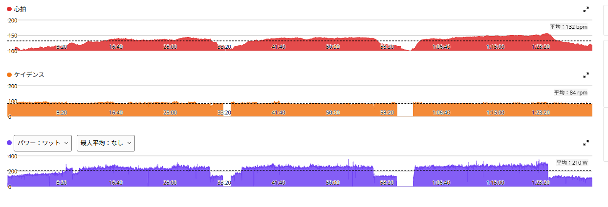
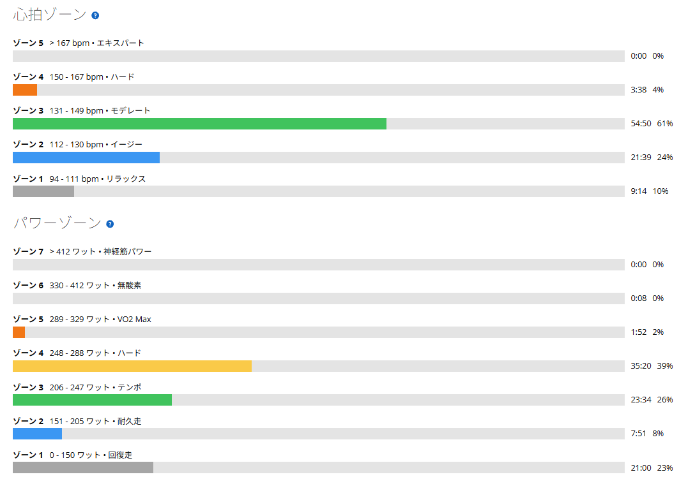

久しぶりのローラー。250W×20分×3本のつもりが、最後が一番強かった
今日は久しぶりにローラーに乗った。最近は外を走る日が続いていて、ローラーは少し間が空いていた。予定していたメニューは、250W前後×20分×3本、レスト5分である。

44.36km・NP232W・TSS105.9
- 全体44.36km / 1時間29分49秒 / 平均気温25.4℃ / 運動量1,130kJ
- 負荷平均210W / NP232W / IF0.843 / TSS105.9
- 心拍・回転平均132bpm / 最大156bpm / 平均84rpm
- 効果有酸素TE3.7 / 運動負荷150

1本目は、わざと240Wから
- 1本目20分01秒 / 240W / 心拍平均135bpm・最大144bpm / 84rpm
予定は250W前後だったが、久しぶりのローラーなので、1本目は合わせにいかず240Wから入った。外を走るときより、やっぱりローラーの方が同じパワーでも出しにくく感じる。実走なら姿勢を変えたり、勾配や速度変化の中で少し力を抜ける瞬間がある。ローラーだと一定姿勢、一定負荷で踏み続ける時間が長いので、「同じ250Wでも、外より重い」という感覚がある。
240W → 252W → 262W。最後が一番高かった
- 2本目20分01秒 / 252W / 心拍平均139bpm・最大144bpm / 84rpm
- 3本目20分22秒 / 262W / 心拍平均144bpm・最大156bpm / 84rpm
- 3本合計約60分 / 平均約251W
1本目で身体がローラーの感覚に戻ってきたので、2本目は予定していた250W前後まで上げた。ここまではかなり安定していて、心拍も135bpmから139bpmへ上がった程度。3本目は余裕があったので少し上げて、一番高い262Wになった。予定していた「一定250W×3本」とは少し違い、結果的には自然なビルドアップ走になった。
3本を合わせると約60分・平均約251W。心拍もパワーに合わせて135、139、144bpmと素直に上がり、最後の1本だけ最大156bpmまで上がった。苦しさだけで押し切った感じではなかった。
2本目は、9月24日とほぼ同じ数字だった
- 9月24日の2本目252W / 心拍平均140bpm（平均気温26.5℃）
- 今日の2本目252W / 心拍平均139bpm（平均気温25.4℃）
同じSST20分×3の2本目と並べると、パワーも心拍もほぼ同じだった。今日は10月8日（TSS165.6）、9日（TSS158.8）と、2日続けて太平山反時計回りを走った翌日である。連日の負荷のあとでも、後半に出力が崩れていないことは確認できた。もちろん、これだけで「疲労がない」とは言えない。
業務用扇風機で膝が冷えたので、長いビブに替えた
今回もうひとつ気になったのが、業務用扇風機である。ローラーでは強い風を当てている。上半身の冷却としてはすごく快適なのだが、今日は膝が冷える感じがあった。室温はそこまで低くなくても、風が膝へ直接当たり続けると、そこだけ冷えてくる。
そこで3本目から、短いビブをやめて長いビブへ替えた。すると、冷えは気にならなくなった。上半身は扇風機でしっかり冷やす。でも膝は長いビブで冷やしすぎない。秋から冬のローラーでは、この組み合わせが使えそうだ。
外とローラーは、やっぱり別物
最近は外で300W前後を出す機会が増えている。太平山、琴平峠、唐沢山では、300W前後を比較的自然に出せる場面も増えてきた。でもローラーになると、同じパワーでも体感はかなり違う。外では出せるパワーが、ローラーでは出しにくい。これは以前から感じていたが、久しぶりに乗って改めて感じた。
だからこそ、外では高出力と実戦的な耐久力、ローラーでは一定出力と持続時間。この2つは別の役割として使っていきたい。
今日やってみて思ったこと
予定どおり250W前後×20分×3本をやるつもりだったが、実際には240W、252W、262Wと少しずつ上げる形になった。それでも結果は約60分・平均251W。予定と少し違っても、その日の感覚に合わせて調整しながら、狙った仕事量へ持っていけたのは良かった。ローラーはやっぱり実走よりパワーが出しにくい。でも、だからこそ一定出力で積む意味がある。
そして今日いちばん実用的だった発見は、もしかするとパワーより長いビブかもしれない。業務用扇風機は必要。でも膝まで冷やす必要はない。冬のローラーでは「身体は冷やすけど、膝は冷やしすぎない」を意識していく。
次に見るポイント
- 60分250W前後で60分を、さらに安定してまとめる
- 心拍ローラーでの250〜260W帯の心拍推移
- フォーム一定出力でもフォームを崩さない
- 外とローラー体感差を引き続き比べる。外でもケイデンスを決めて走る
- 服装と風秋冬ローラーは長いビブ。扇風機の風を膝へ直接当てすぎない
- 週末日曜のMTBへ疲労を持ち越しすぎない